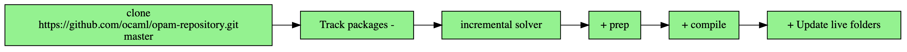

A Multiverse of Glorious Documentation
Lucas Pluvinage, Tarides,
Jon Ludlam, University of Cambridge
Goals
- To produce correct, cross-referenced documentation for all versions of all packages
- To ensure this is automated, incremental, low latency and repeatable
- Provide a solid basis for further innovation, e.g. links to/from source, type-aware search, etc.
Odoc and HTML file placement
- Use odoc
- Odoc requires consistent set of packages compiled together
- Can’t have more than one version then!
- Solution: build docs separately then ‘union’ them
- Odoc 2.0 supports this
Universes
module M : Stdlib.Set.S with type t = mytype
Multiverse
"Blessed" packages
these chosen universes are called 'blessed' universes
Incremental Pipeline for Fast Builds

- Track the opam repository
- Solve for each package version
- Install each resolution and extract the installed files
- Compile the documentation for each package and extract the compiled files
- Generate the HTML files from the compiled files
Incremental Solver
- Key: opam repository commit id, list of tracked packages
- State: currently known resolutions
- value: resolutions for tracked packages
Preparation/Blessing
- Key: a resolution to install, the opam-repository commit id, and the commit of 'voodoo'
- State: external filesystem with the results of 'voodoo-prep'
- value: hash of the results of 'voodoo-prep'
When builds complete we choose the blessed universe:
- Most dependencies - including optional dependencies
- tie breaker: most reverse dependencies
"Compilation"
- Key: 'Preparation' step hash for the package, 'Compilation' step hash for the package's dependencies, voodoo-do and opam commit ids.
- State: external filesystem with the results of 'voodoo-do'
- value: hash of the output
HTML generation
- Key: Artifacts hash of the package's linked output
- State: external filesystem with the results of 'voodoo-gen'
- value: hash of the HTML files
Atomic updates
- Distinguish between breaking and non-breaking changes
- Non-breaking changes (e.g. new package added) can be done non-atomically
- Breaking changes need atomic updates - via symlink on server
Stats
- 50G of HTML files
- 3300 packages, totalling 17400 versions (~2K opam installation failures)
- 18600 versions living in parallel universes
- 3.3M documentation pages
- Package having the largest number of parallel universes: logs.0.7.0 (209 universes)
- 6 hours build on the ocamllabs cluster
Further work
- Optimizing job duration and data movement
- Towards a formalisation of data pipelines ?
- Public APIs to access the CI output and build new frontends
- VSCode integration
- Search
- Comparison/coalescing of different universes
- Diffs between versions